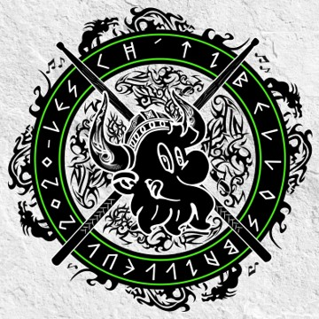
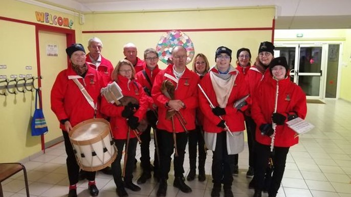

Musicien depuis le CE2, il est passionné par la famille des cuivres. Il a commencé par apprendre la trompette à l’école de musique de Vieux-Berquin puis à l’école de musique de Le Doulieu. Après plusieurs années à la trompette, il est passé au tuba. Il a aussi intégré l’harmonie Les Amis Réunis de Le Doulieu il y a 4 ans au tuba.
En 2022, il a rejoint un groupe local, les Ch’tis Bellos au pupitre des tubas. Ils réalisent principalement des sorties pendant le carnaval de Bailleul, mais aussi différentes animations.
Mais il joue aussi de la cornemuse dans un groupe traditionnel, Les Menestriers de Flandres. Passionné de musique écossaise et de Bretonne, il a voulu essayé la cornemuse. Ceci lui a plus et il continue dans ce groupe, ils réalisent principalement des sorties avec des géants portés, typiques de la Flandre.
